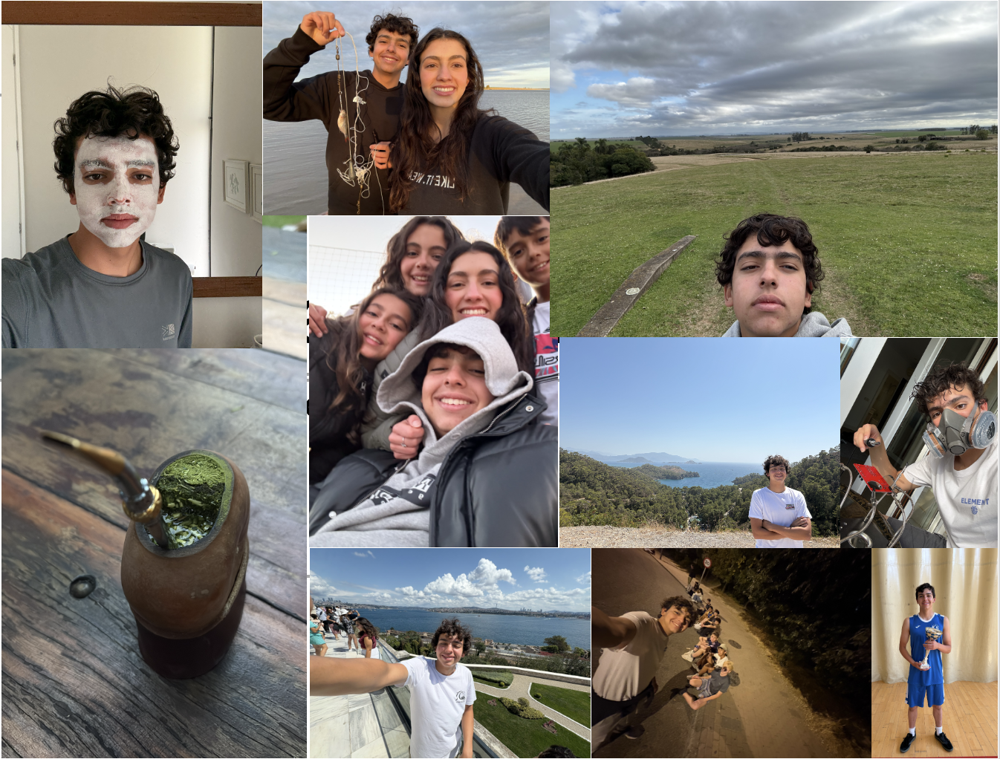

I am Max Zero de Sousa Costa. This is exciting, and I'm looking forward to sharing my journey with you. I am a curious person, and never did i ever think i would be standing in this lab, in this university. I was born to my parents in São Paulo, Brazil, and with my 3 other siblings i lived in brazil until i turned 13, I lived there, and never even had touched a lathe, or any kind of mechanical instrument. As i grew up, i also grew in to the person i am today, im not the best at anything, but i am excited to be here. I play the piano pretty well, im a fairly good swimmer, and i love eating. If my diet was limited to just 3 basic ingredients, i would chose, eggs, milk, and sugar cane.
A year ago, i encountered what i think will define my future, micro controllers. i recently have started to explore the possibilities with different types of electrical components, and to acomplany this journey, I also decided to pick up C++ as a way to program these micro controllers. my recent projects have included: a locked box that when started asks for a pass code and then locks untill the same compination is inputed on the key pad, and then it unlocks with servos. i also built a rudamentary system of radios that light led once a button press is detected on another device in the network.